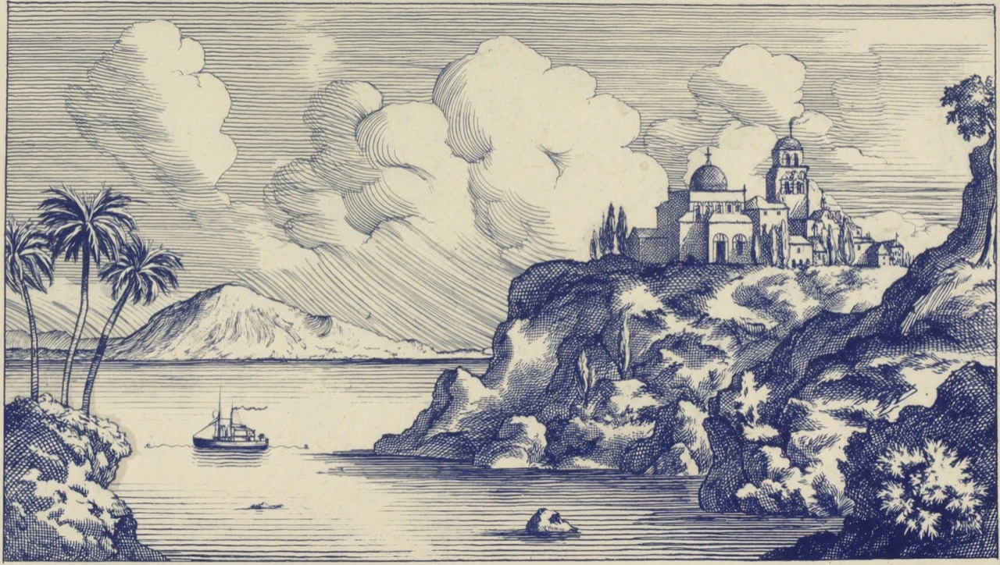
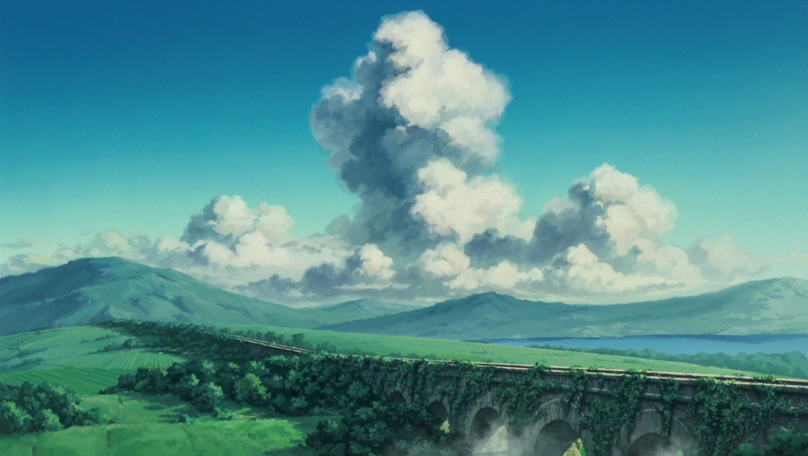
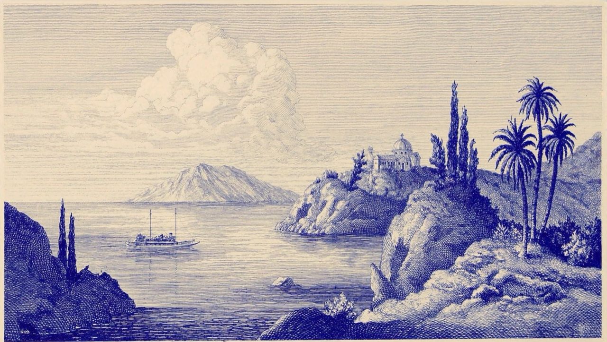

01 · Dew Glass
Milky Dew
Softly frosted, with a warm inner bloom. The tide stays visible beneath the surface.
blur(14px).ld-glass
The lens bends what is under it: the centre magnifies, the rim folds the page round its edge, and the three channels part into a thin rainbow. Drag it; press to squash it.
lensRefract().Clear dew, liquid metal, or a circulating tide of type. Three optical studies over the same living field. Drag the lens to bend the words and light beneath it.
Soft dew, clear lenses, pearl chrome and tinted prism edges—four surfaces over a living tide of type. Move your pointer across the cards to shift the specular sheen.
Softly frosted, with a warm inner bloom. The tide stays visible beneath the surface.
A clear window into the tide. Magnified glyphs bend toward a fine pearl edge.
Double-specular conic metallic bevel with lagoon/sand/sky fringes travelling at 24°/s and pointer-tracked highlights.
Cyan and sand highlights catch opposite edges. The refracted tide keeps its colour beneath a clearer surface.
Dither and engraving turn any picture into print: two inks, no gradients, the grain left visible.


